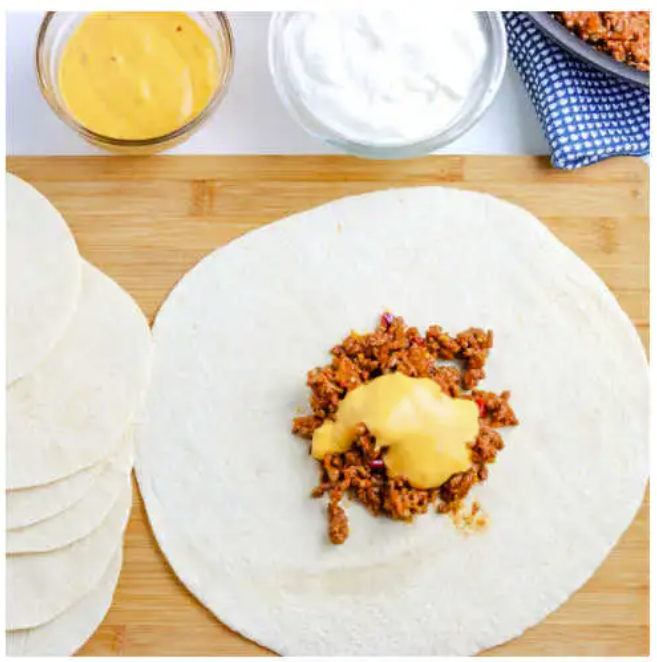

Crunchwrap Supreme

The notorious Crunchwrap Supreme created by the infamous Taco Bell.
Taco Bell is the best fastfood out there. When you're hungry it hits the spot constanlty bursting with flavor.
Many people might not favor taco bell because of how unhealthy it is but there are many
taco bell chains out there than actual mexican places.
Photo Gallery

Taco Bell uses the highest quality beef
out there in the market. They also season it with their special
taco bell beef seasoning. Try the crunchwrap supreme because once you try it,
you can never go back to eating real tacos! It's the TACO BELL EFFECT

Taco Bell's beef and cheese are seasoned to the core.
That spicy flavor paired with savory melted gooey cheese. The combination of
the cheese and beef creates a satisying and comforting taste.
With beef and cheese aside, they decorate the crunchwrap
supreme with healthy vegetables to balance out the oilyness of the meat.
They add diced tomatoes, lettuce, sour cream and melted cheese. All of
the flavors go so well together and bursting with flavor.
Taco Bell has an iconic fold especially for the crunchwrap supreme. It
stands out from any other taco created by them and as well as any other
mexican place. Who would've thought to create such a meal by folding a quesadilla into a pentagon shape?
What makes this dish more iconic than it already is is how they grill it.
They don't deep fry it or oven bake it except they pan fry it. They panfry
the crunchwrap supreme until it gets golden cripsy brown.
Likes
- Brian likes this!
- Johann also loves this too!
- My mom hates taco bell but she loved reading about this liked it!


{kind=link}